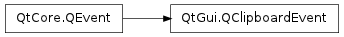

QClipboardEvent¶

Detailed Description¶
The PySide.QtGui.QClipboardEvent class provides the parameters used in a clipboard event.
This class is for internal use only, and exists to aid the clipboard on various platforms to get all the information it needs. Use QEvent.Clipboard instead.
See also
PySide.QtGui.QClipboard